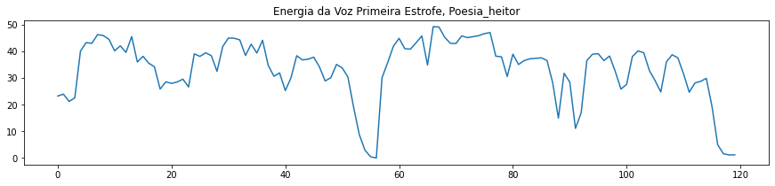

1. Objetivos
Este laboratório tem os seguintes objetivos:
2. Roteiro
Neste laboratório, foi utilizado o roteiro disponibilizado no próprio arquivo do Jupyter Notebook. O arquivo foi editado para atender à proposta e a versão final pode ser visualizada neste link.
3. Desenvolvimento
As gravações utilizadas neste laboratório foram as mesmas gravadas no laboratório 6. Foram utilizados os áudios da gravação de poesia, feitos pelos integrantges do grupo no software Audacity usando microfones comuns. Os áudios originais podem ser visualizados a seguir:
Poema de Heitor:
Poema de Luiz:
A imagem a seguir mostra o sinal gráfico de cada arquivo de áudio gravado.
Com base nos arquivos de áudio gravados, foram separadas a primeira estrofe de cada um:
Poema de Heitor (primeira estrofe):
Poema de Luiz (primeira estrofe):
A imagem a seguir mostra o sinal gráfico de cada estrofe.
A seguir é exibida a janela de Hamming para cada estrofe:
Abaixo pode-se ver o sinal de energia para cada estrofe.

Foram calculados os parâmetros LPC, realizada a separação U/UV e espectro + envoltória LPC.
Para a estrofe de Heitor:
Limiar VAD 41.20847341174478
Limiar U/UV 43.90847341174478
Sonoros = 19 e Surdos = 9
Os 19 segmentos sonoros estão representados na imagem abaixo.
Os 9 segmentos surdos estão representados na imagem abaixo.
O espectrograma desta estrofe pode ser visto abaixo.
Para a estrofe de Luiz:
Limiar VAD 39.04239905594365
Limiar U/UV 41.74239905594365
Sonoros = 8 e Surdos = 21
Os 8 segmentos sonoros estão representados na imagem abaixo.
Os 21 segmentos surdos estão representados na imagem abaixo.
O espectrograma desta estrofe pode ser visto abaixo.